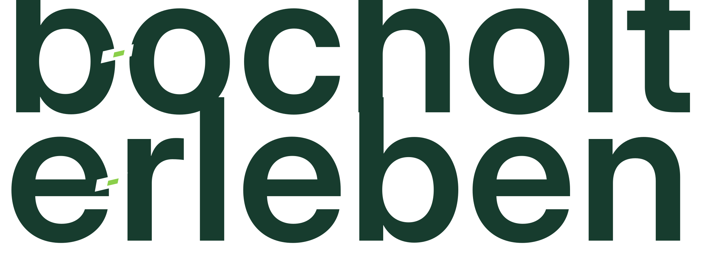

B2 · OFFENE EINLADUNG
Offener Impuls
Die vollständige Wortmarke bleibt der primäre Identitätsträger. Eine präzise diagonale Öffnung mit schwebendem Impuls erscheint ausschließlich an den beiden Wortanfängen. Die Kleinmarke ist exakt aus dem ersten Buchstaben abgeleitet und erhält nur unter 24 px eine dokumentierte optische Akzentkorrektur.
91/100internes Gate
Ein Identitätssystem
 Primärwortmarke
Primärwortmarke
Responsive Verdichtung Direkte Kleinmarkenableitung
Direkte KleinmarkenableitungEchte Rastergrößen
1624324864
App-Masken

Heute rund um Bocholt
Events und Aktivitäten, die heute wirklich relevant sind.
1. AUGUST · BOCHOLTSommerabend am AaseeMusik, Wasser und ein entspannter Abend draußen.
AKTIVITÄT · FAMILIEGemeinsam entdeckenEine lokale Idee für einen unkomplizierten Nachmittag.
HeuteEventsAktivitätenInfo
VERANSTALTUNGEN
Bocholt neu erleben
Kuratiert, lokal und ohne langes Suchen.
01
AUG
AUG
BOCHOLTAbendmarkt in der Innenstadt
Lokale Stände, Begegnungen und ein entspannter Start ins Wochenende.
FÜR VERANSTALTERProfessionell sichtbar werdenEin verlässliches Umfeld für lokale Angebote und Startpartner.
Scorecard
19/20Produkt- und Markenpassung
17/20Eigenständigkeit
14/15Primärwortmarke
14/15Kleinkontextkontinuität
9/10Systemerweiterung
9/10Produktintegration
4/5Robustheit
5/5Konstruktion und Provenienz
Belegte Stärken
- vollständiger Name bleibt der Hauptabsender;
- individuelles Merkmal wiederholt sich semantisch an beiden Wortanfängen;
- Kleinmarke ist keine separate Erfindung;
- funktioniert monochrom, invers, maskiert und ab 16 px;
- ruhige Integration ohne neue UI-Welt.
Offene Risiken
- professioneller Ähnlichkeits- und Markenrechtscheck bleibt vor Anmeldung erforderlich;
- 16 px ist die untere praktische Grenze und nutzt eine optische Akzentkorrektur;
- eine finale Mikrozeichnung erfolgt erst nach Richtungsfreigabe;
- noch keine öffentliche oder technische Umsetzung.